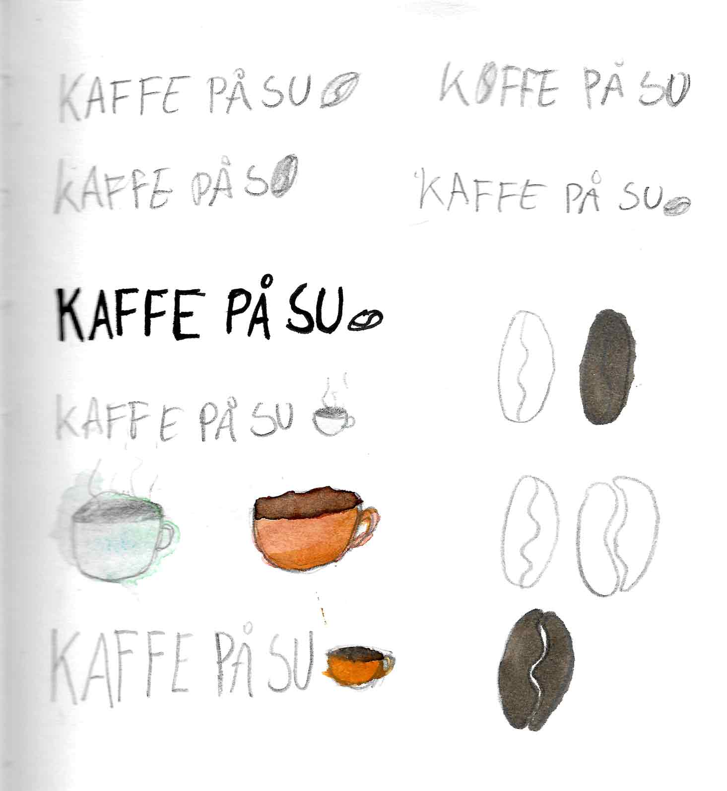
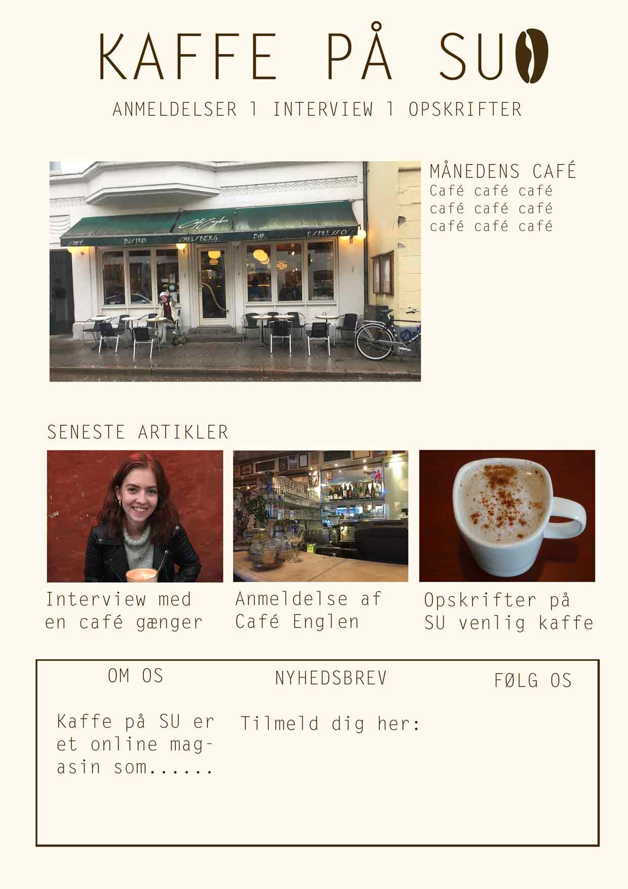
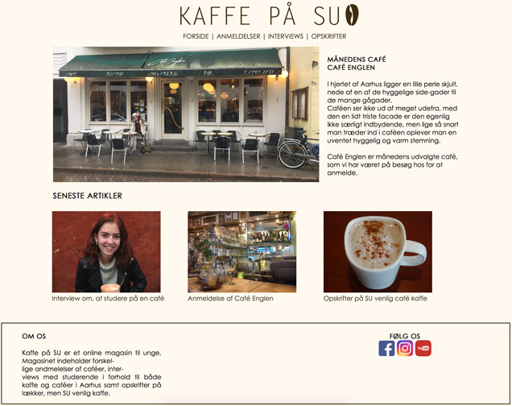

Case 2 var en utrolig spændende og udfordrende opgave, da det var en individuel opgave. I denne opgave skulle vi også selv lave alt indholdet på siden, modsat case 1 hvor vi brugte billeder fra internettet og tekst fra Godsbanens egen hjemmeside.
Case 2 var lidt skræmmende i starten, da vi som sagt skulle lave alt indholdet selv og oven i det også helt selv kode siden, uden en gruppe til at hjælpe og støtte én. Det at skulle helt selv stå på egne ben gjorde også at jeg har lært meget mere, end jeg ville have gjort i et gruppeprojekt.
I case 2 brugte jeg ikke virksomheds og kommunikations fagene nok, synes jeg, og havde ikke i lige så høj grad de fag i tankerne da jeg tog valg omkring hvad der skulle være på hjemmesiden, som jeg havde interaktion og design i tankerne. På trods af, at jeg ikke synes at jeg brugte de fag nok, tog jeg noget med fra alle fag, og lærte noget fra dem alle.
I kommunikation lærte jeg at fokusere på målgrupper, deres ønsker og valg af indhold på siden baseret på deres behov. Det var desuden også sjovt selv at skulle skrive artiklerne til siden, og vælge hvad der skulle skrives om. I virksomhed var det meget tidsestimering som var det jeg arbejdede med, og denne opgave var en god måde at finde ud af hvor lang tid, de forskellige ting tog for mig at lave.
Min logoproces i design gik super godt, og jeg samme gjorde min skitseproces af siden. Især logoprocessen var lærerig, da jeg øvede mig i, at komme med mange og forskellige idéer, frem for bare at bestemme mig for det første og bedste jeg lavede.

Dog sad jeg fast ved farvevalget af siden, og havde meget svært ved, at finde lige de farver og farvekombinationer jeg ønskede.
Til sidst lykkedes det, og jeg blev godt tilfreds med resultatet.

I interaktion lærte jeg også helt vildt meget, da jeg selv skulle stå på egne ben. Der var flere udfordringer der gjorde, at jeg ikke kunne kode siden helt som jeg havde ønsket i mit mock-up, men der lærte jeg at arbejde uden om det, og lave nogle løsninger der ikke nødvendigvis var det jeg oprindeligt havde ønsket, men som fungerede og jeg var tilfreds med.

Case 2 havde som sagt virket lidt skræmmende for mig, men var utrolig spændende og lærerig. Opgaven har betydet, at jeg har måtte stole på mig selv og mine evner, især i forhold til kodningen, og jeg er blevet meget overrasket over hvad jeg egentlig kunne, hvilket har været lidt af en øjenåbner for mig, og har givet mig mere selvtillid og blod på tanden i forhold til denne uddannelse. Det har lige som i case 1 igen også været rart at se de forskellige fag samlet ét sted til ét produkt.